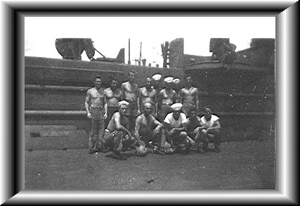

Back row: L-R: Joe Hiller, Steve Toth, John Kann, Cranston
(Cack) Wilson, Carl Mays, Robert Frye,
Kenneth O'Deen, Rudy Kasak
Kneeling: L-R: Mack Prescott, Dozier Forysthe, Emil O'Bernier,
Robert Glover, Howard Manthei
NO WONDER WE WON THE WAR: THESE GUYS SCARED ME
TOO